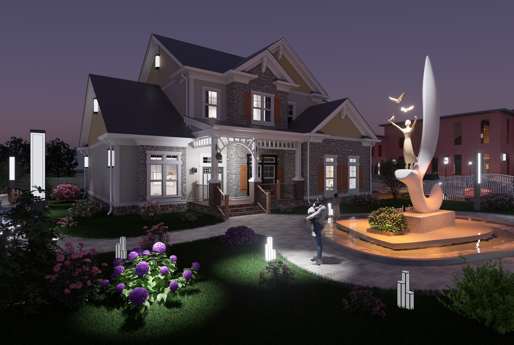
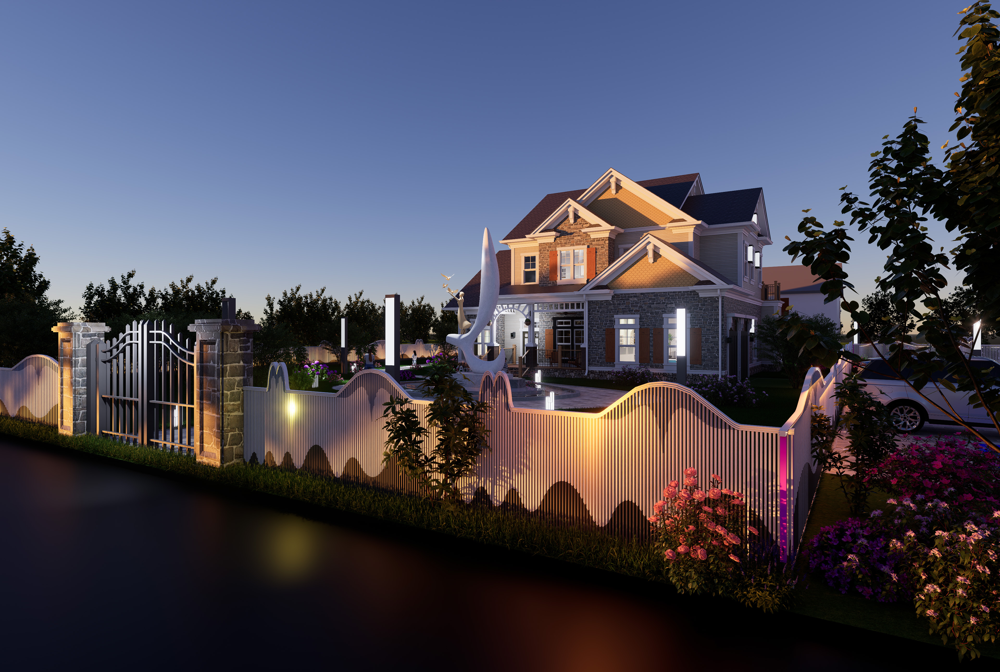
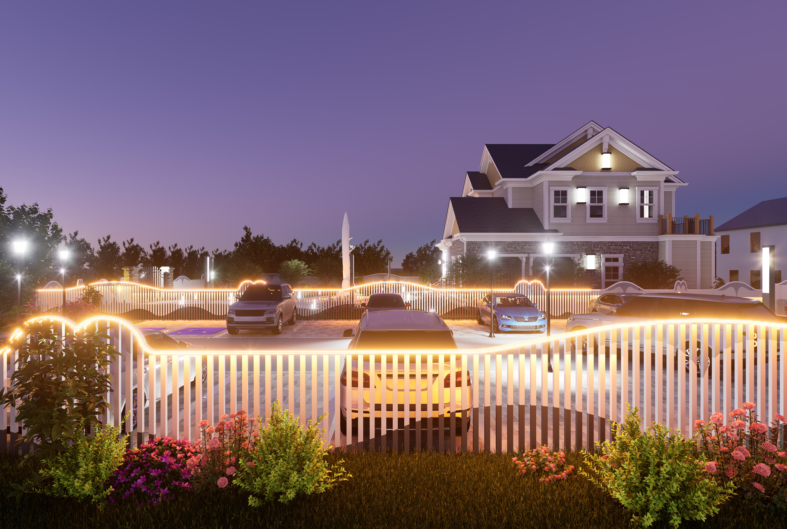
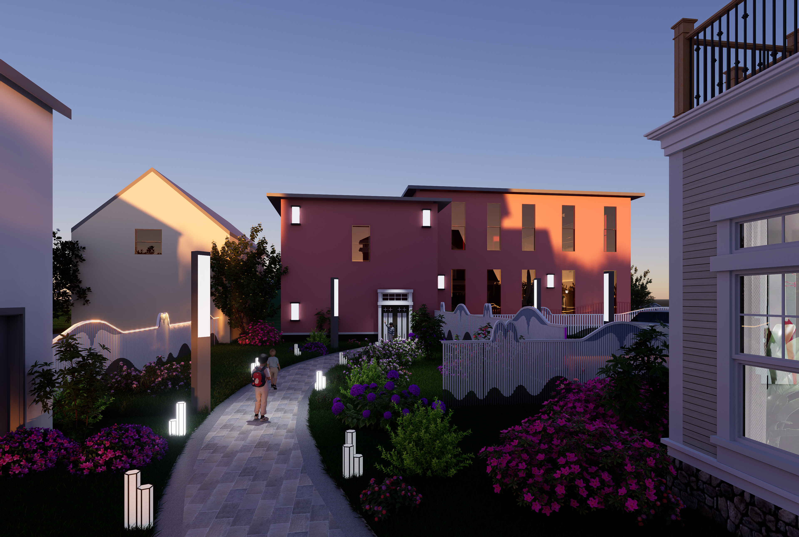
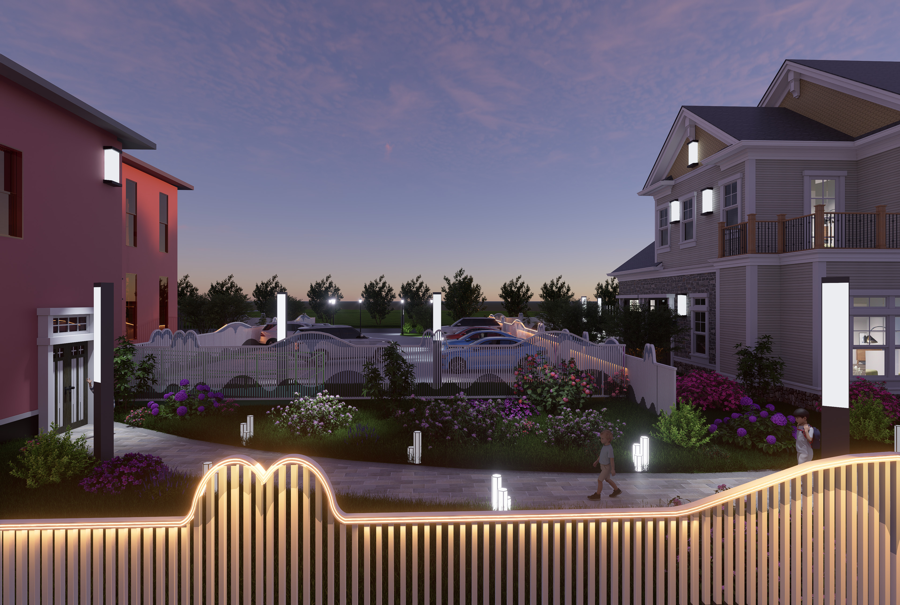
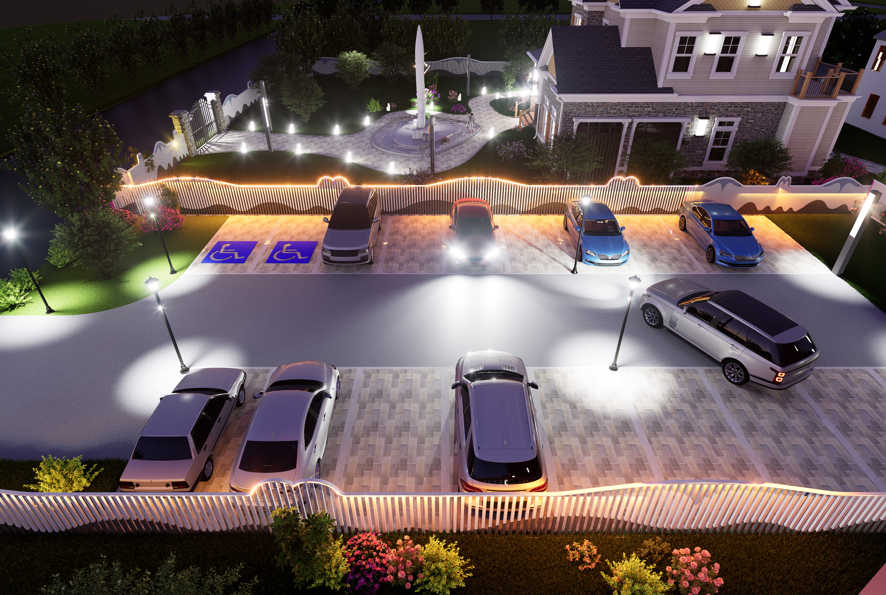
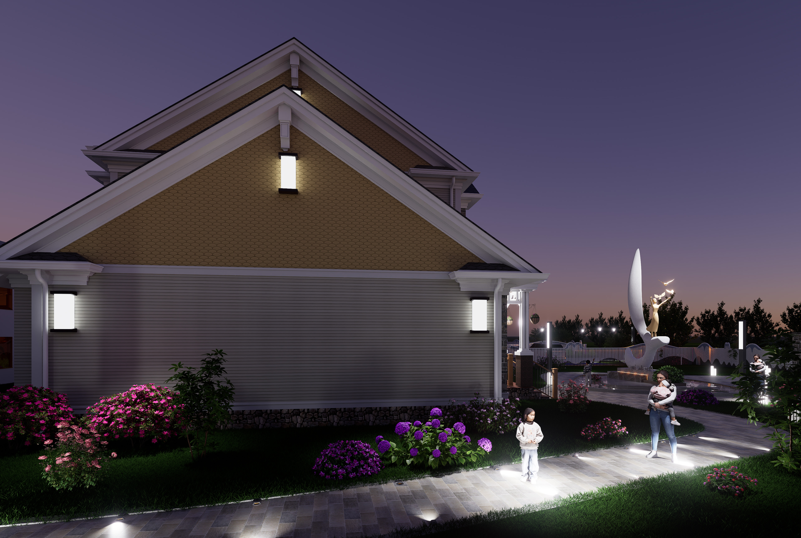

Architecture
Aurora Shelter "Home"
Beyond academia, my experiences in the streets and shelters of the Toledo community allowed me to grasp the deeper significance of architecture. During winter, I often saw unhoused individuals standing along Toledo’s freezing streets, clutching torn pieces of cardboard with faint words of "home needed." I rarely dared to meet their eyes or linger my gaze, because I was afraid that misplaced pity might compromise the dignity they struggled to preserve. Yet I could not stop wondering where they would go once they disappeared from those corners—whether they had found shelter, or simply been carried away by the harsh wind.
Fate is something that is hard to explain. In early 2025, I was given the opportunity to confront these questions directly through the AIA Toledo architectural competition, where I designed a shelter for unhoused women and children. During the early stages of the project, I visited the Aurora Project and spoke with residents who had experienced displacement. Their concerns were not about form or structure, but about safety, dignity, and the simple need for a place that could truly be called "home."
In response, I rejected an institutional shelter model and instead designed a residential environment grounded in Toledo’s local style. By drawing on familiar spatial patterns, I sought to restore a sense of belonging and dignity rather than reinforce marginalization. When the Toledo City Council formally recognized the project, I realized that architecture’s power extends beyond providing shelter, which can participate in public dialogue and contribute to social healing.







